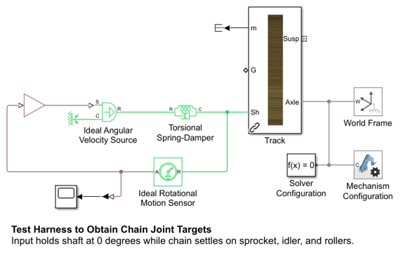
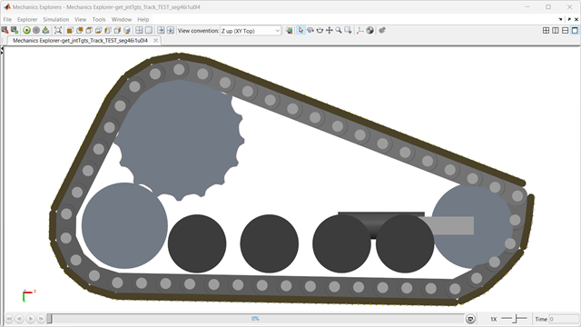
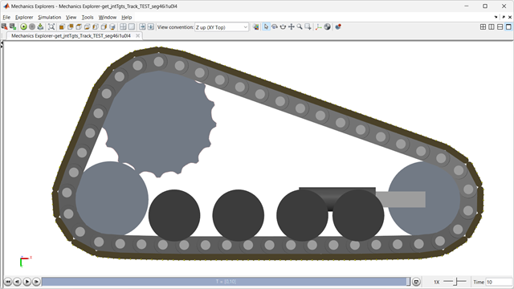

Generate Joint Targets for Chain Track (46 segments, 2 idler, 4 lower)
This code generates a MATLAB script to specify the joint targets for a segmented chain track. Joint targets are necessary to help guide the assembly of the model so that the chain meshes with the sprocket and goes around all of the rollers and idlers.
A preliminary set of joint targets enables the chain to assemble in a test harness model where the sprocket is held in a fixed position. A short simulation is run and the final joint angles are saved to create the final set of joint targets.
The code used to generate the track joint targets is here: get_jntTgts_Track_seg46i2u0l4.m. It can be adapted for models that have a different track configuration
(return to Tracked Vehicle Model with Simscape Overview)
Contents
Open and Configure Test Harness Model
A test harness model is provided that holds the sprocket in a fixed position. We swap in the track model for which we want to obtain a set of joint targets.
Define Preliminary Set of Joint Targets
For the initial assembly, we need a set of joint targets that will enable the track to surround the sprocket, rollers, and idlers. The idler is fully retracted and a MATLAB script is used to create a preliminary set of targets that surrounds the components. This is good enough to get the model to assemble, but it would be a poor set of joint targets for simulation tests as the initial transient would be very harsh.

Simulate with Preliminary Targets
A simulation is run to let the chain settle. MATLAB is used to extract the final positions of the joints in the segmented track.

track_joint_targetsC46I2 =
46×3 cell array
{'on' } {'Low'} {[ 21.0690]}
{'on' } {'Low'} {[ 21.2728]}
{'on' } {'Low'} {[ 21.1778]}
{'on' } {'Low'} {[ 14.6799]}
{'on' } {'Low'} {[-9.8563e-07]}
{'off'} {'Low'} {[ 2.7817e-08]}
{'on' } {'Low'} {[ 1.0630e-06]}
{'on' } {'Low'} {[ 3.6382]}
{'on' } {'Low'} {[ 23.3265]}
{'on' } {'Low'} {[ 28.6317]}
{'on' } {'Low'} {[ 28.6317]}
{'on' } {'Low'} {[ 23.3266]}
{'on' } {'Low'} {[ 3.6382]}
{'on' } {'Low'} {[ 5.4746e-07]}
{'on' } {'Low'} {[ 0.6694]}
{'on' } {'Low'} {[ 0.7268]}
{'on' } {'Low'} {[ 2.0812e-07]}
{'on' } {'Low'} {[ 7.6397e-05]}
{'on' } {'Low'} {[ 8.8258e-05]}
{'on' } {'Low'} {[-2.4946e-06]}
{'on' } {'Low'} {[ 0.0063]}
{'on' } {'Low'} {[ 0.0074]}
{'on' } {'Low'} {[ 5.2087e-07]}
{'on' } {'Low'} {[ 0.8363]}
{'on' } {'Low'} {[ 0.1882]}
{'on' } {'Low'} {[ 1.7405e-06]}
{'on' } {'Low'} {[ 6.7648]}
{'on' } {'Low'} {[ 25.1368]}
{'on' } {'Low'} {[ 28.4302]}
{'on' } {'Low'} {[ 27.8813]}
{'on' } {'Low'} {[ 27.9110]}
{'on' } {'Low'} {[ 28.2754]}
{'on' } {'Low'} {[ 15.0441]}
{'on' } {'Low'} {[-6.9240e-06]}
{'on' } {'Low'} {[ 3.4506e-05]}
{'on' } {'Low'} {[ 3.8711e-05]}
{'on' } {'Low'} {[ 3.6067e-05]}
{'on' } {'Low'} {[ 3.5199e-05]}
{'on' } {'Low'} {[ 3.5527e-05]}
{'on' } {'Low'} {[ 3.5552e-05]}
{'on' } {'Low'} {[ 3.5481e-05]}
{'on' } {'Low'} {[ 3.7609e-05]}
{'on' } {'Low'} {[ 4.2478e-05]}
{'on' } {'Low'} {[ 3.8993e-05]}
{'on' } {'Low'} {[-1.2114e-05]}
{'on' } {'Low'} {[ 8.7290]}